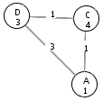

The A* Search Algorithm is a fast algorithm for finding the shortest path from a start node to a goal node in a weighted graph that was developed for use in artificial intelligence graph searches. A* makes use of a heuristic function (or quickly computed estimate of the cost to reach the goal from each node), called ĥ, to guide its search. If ĥ underestimates the actual cost to the goal ("the real heuristic," referred to as h), the A* Algorithm is guaranteed to find the shortest possible path from the start node to the goal node. Otherwise, A* follows the "Graceful Decay of Admissibility": If ĥ overestimates h by no more than d, then the A* Algorithm will find a solution with a cost that is no more than d greater than the optimal solution. Thus, an overestimating ĥ function may lead the A* Algorithm to find a less-than-optimal path. However, a heuristic that greatly underestimates the true cost will cause the A* Algorithm to expand more nodes and therefore take longer to find the shortest path. For this reason, one of the foremost challenges in many artificial intelligence graph searches is to develop a heuristic that can be quickly computed and that will provide a very close underestimate of the true cost to the goal.
The A* Algorithm is nearly identical to the Best-First heuristic search algorithm. Like Best-First, A* maintains an open queue of nodes that is sorted in ascending order according to the values of (cost(node) + ĥ(node)). Thus, A* takes both path length and heuristic value into account when deciding which node to close next. For this reason, an inaccurate heuristic can mislead the A* Algorithm to close a node with a greater-than-optimal cost, just like in the Best-First Search Algorithm. However, this is where the A* and Best-First algorithms differ; while Best-First is never able to find the truly optimal path after closing a node with a greater-than-optimal cost, A* can still find the shortest path as long as ĥ underestimates h. Here is a simple example:

In the above diagram, when node D is closed, node A will be added to the open queue with a value of (cost(A) = 3 + ĥ(A) = 1), and node C will be added to the open queue with a value of (cost(C) = 1 + ĥ(C) = 4). Since 4 < 5, node A will initially be closed with the greater-than-optimal cost of 3. However, as long as ĥ underestimates h, A* will eventually close node C at which point node A will be removed from the closed list and then will be added to the open queue with the optimal cost of 2. In this way, the A* Algorithm can recover from an errant ĥ function, whereas the Best-First Algorithm would fail to find the optimal path.
This animation shows the execution of the A* Search Algorithm in two ways. On the left, the search graph is displayed with changing node colors to indicate opening and closing nodes (more information on the color-coding appears in the next paragraph). The numbers under the nodes' names are the ĥ values for the nodes, and the numbers along the edges are the edge weights. The right side of the window contains a search tree that is built dynamically to show the progress of the A* Algorithm in searching the graph. The coloring of the tree is coordinated with the coloring of the graph. In the search tree, the numbers under the node names are the costs to reach each node along the current path in the tree. Additionally, the open queue and the closed list are displayed at the top of the viewing window. Open nodes are displayed as node_name(predecessor_name-cost+ĥ). Therefore, the nodes in the open queue are ordered by the sum of these numbers inside the parentheses (with alphabetical order used to break ties). The closed nodes are presented in a similar format, with the closing node's name appearing first followed by (in parentheses) the name of the node's predecessor and the current closing cost of the node. Furthermore, the pseudocode window tracks the algorithm by highlighting the section of code that produced the most recent change in the animation.
The coloring scheme is used to highlight open and closed nodes and also shows recent changes in executing the A* Algorithm. The darker green node in the graph and tree indicates the node that has just been closed in the current loop. The paler green nodes are nodes that have been closed in previous loops. Darker blue nodes are nodes that have just been added to the open queue in the current loop. Notice that these nodes will always be connected directly to the darker green node by an edge. Nodes that have faded to a paler hue of blue are nodes that are still on the open queue but were added in previous loops. In this way, the blue nodes (both dark and light) in the search tree comprise the entire open queue, making it easy to find the path to the next node that will be closed. When a node in the tree turns red, the A* Algorithm has just taken that node off the closed list and placed it back onto the open queue with an updated cost. These red nodes will fade to a paler shade after the loop in which they are re-expanded. Since a node can be added to the open queue from multiple predecessors, a node sometimes is added to the open queue multiple times. When the duplicate node with the lowest cost is taken off the open queue and closed, the other duplicate nodes remain in the open queue until they are removed from the front. When an already-closed node is taken off the open queue in this manner, the search tree removes the blue shading from this node, indicating that it is no longer in the open queue. Finally, when a node is closed, the current shortest path to the closing node's predecessor in the graph is highlighted in yellow to show the current path being probed in the search graph.